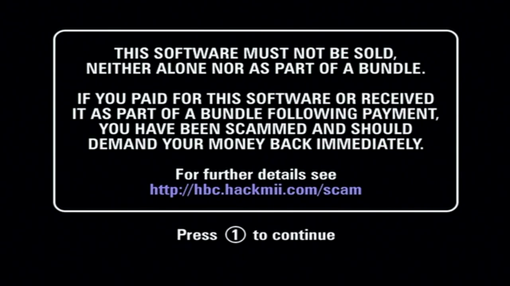
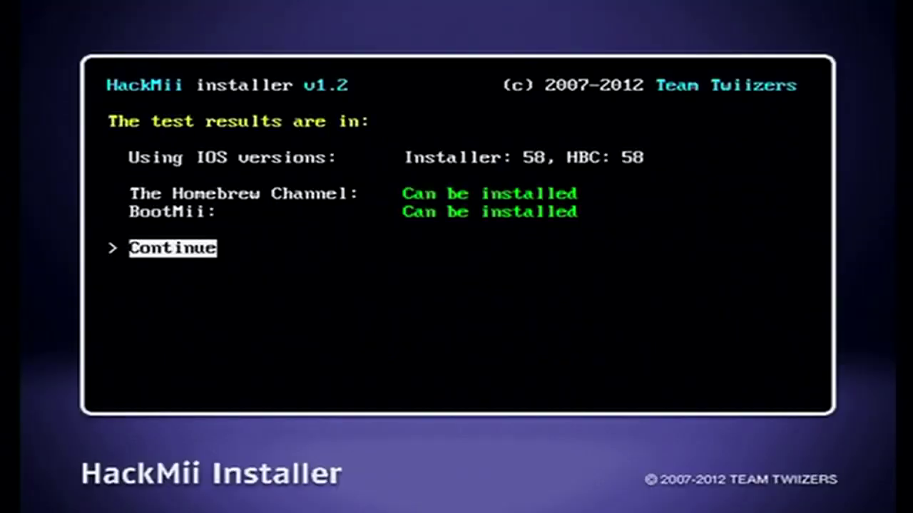
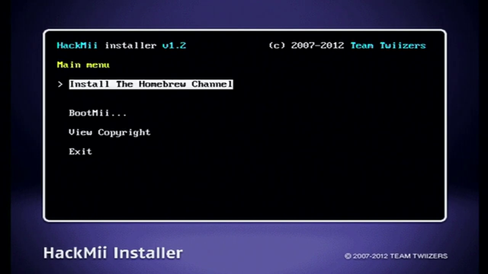
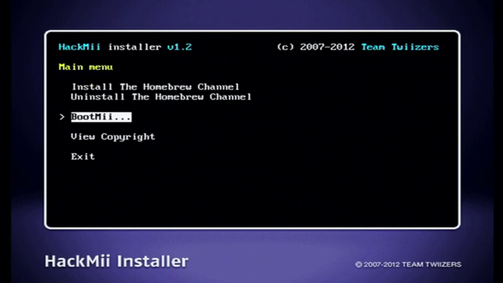
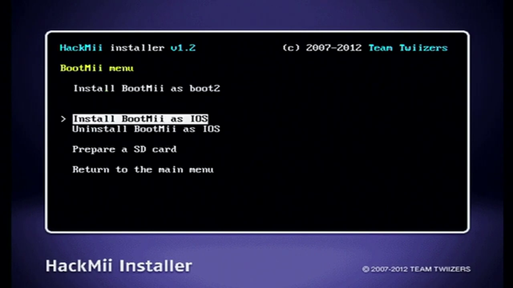
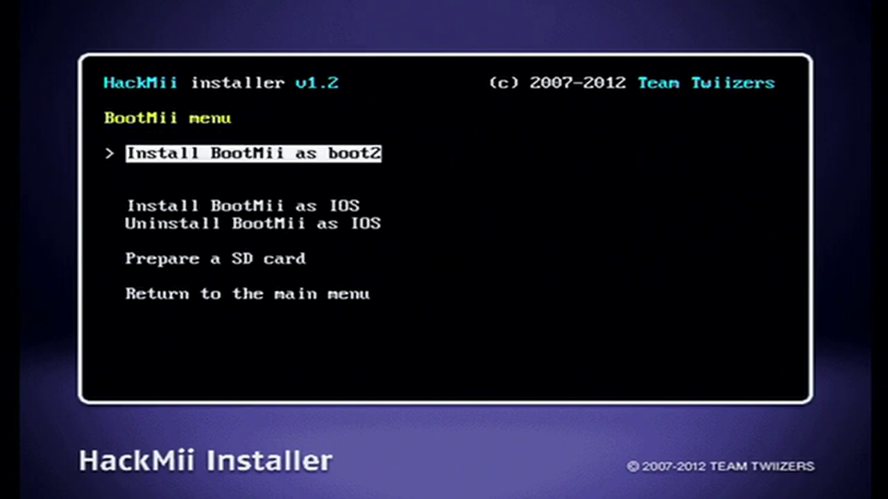

Hackmii Installer
This guide will show how to install the homebrew channel and bootmii.
For this guide, you will need:
• A Wii in the hackmii installer
• An SD card formatted to FAT32
1. Wait 30 seconds on the scam warning screen, then press 1 to continue.
2. Select continue on the results screen. It is normal for bootmii to only be able to be installed as IOS.
3. Select "Install the homebrew channel". Then press continue when finished.
4. Select "back", then select "bootmii...".
5. Select "Install bootmii as IOS", then select continue if prompted.
6. If available, select "Install bootmii as boot2". This offers more protection against bricks. Don't worry if this option does not appear for you.
7. Select "exit" to boot to the homebrew channel.